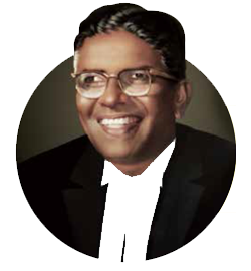

JUSTICE K. S HEGDE Founder1909 - 1990
Born in Kowdoor village on June 11, 1909, Kowdoor Sadananda Hegde had his early education at Karkala and Mangaluru. Thereafter, he obtained a degree in Economics from the Presidency College in Madras and a degree in Law from the Government Law College, Madras. He began his legal practice at Karkala in 1936 and later moved to Mangaluru, where he was appointed as the Public Prosecutor of South Canara district in 1948. He was an elected Member of the First Council of States (now known as the Rajya Sabha). In 1954, he represented India at the General Assembly of the United Nations. He then, became a Judge of the Mysore High Court. In 1966, he was appointed the first Chief Justice of the Delhi and Himachal Pradesh High Court. He held this office till he was elevated to the post of Judge of Supreme Court of India in 1967. A man of integrity and strong values, Justice K S Hegde resigned from the post of Chief Justice in 1973, in protest against the supercession of senior judges in the appointment of the Chief Justice of India. In 1977, he won the election to the Lok Sabha and was elected as the Speaker of Lok Sabha, an office he held till 1980. After a distinguished career, he retired from public life and settled at Nitte, only to relentlessly work for the upliftment and empowerment of the rural people. Justice K S Hegde passed away on May 25, 1990.